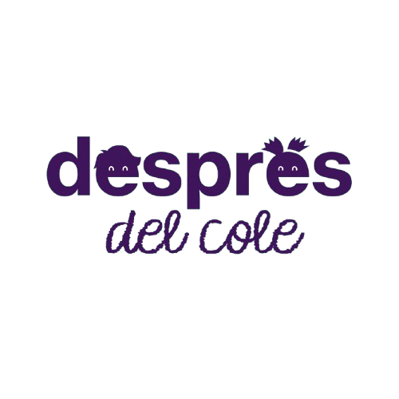
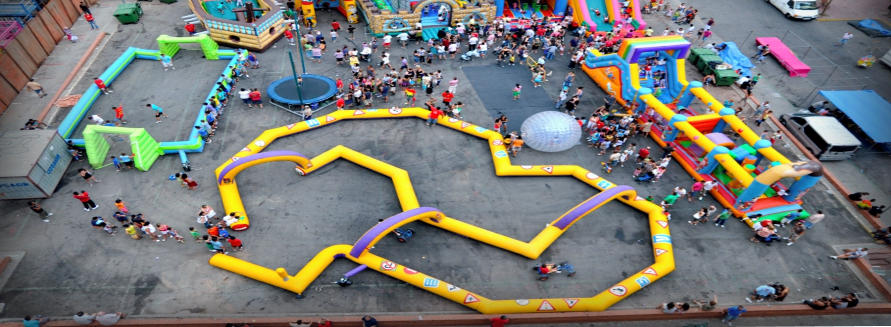
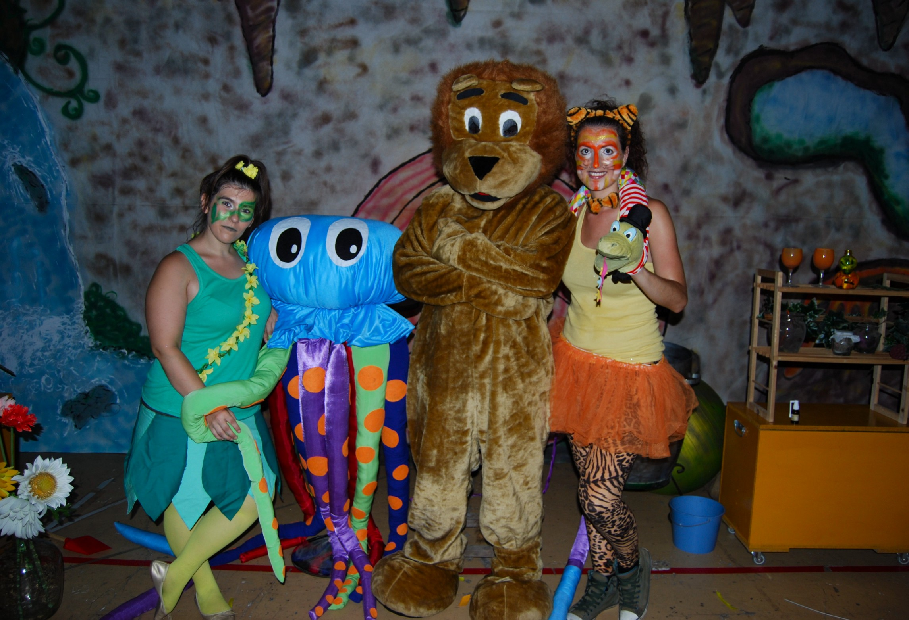
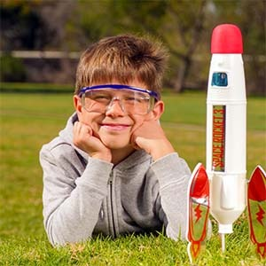
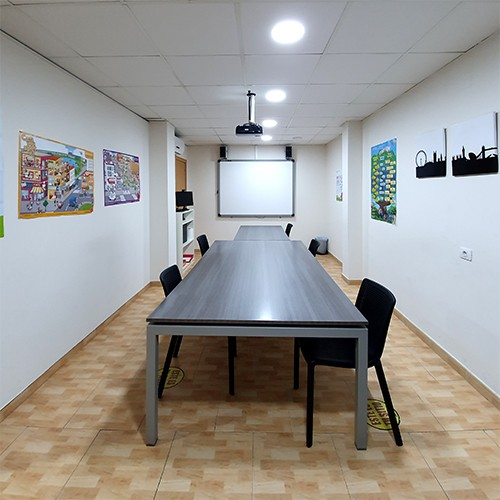
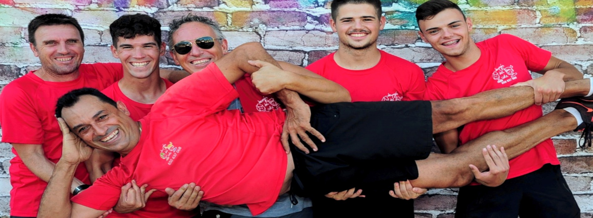

Juegos y gymkanas
Retos, bailes y juegos para hacer equipo y pasarlo bien juntos.
01 / A MOVERSE
Saltos, risas y un montón de «¡otra vez!».
Hinchables, animación y actividades para crecer
con las ganas de jugar intactas.

Una fiesta que recordar. Una tarde para descubrir.
O un empujón con los estudios.
Cuéntanos por dónde empezamos.

UNA FIESTA MUY VUESTRAHinchables, juegos, disfraces y animación para que los peques sean los protagonistas. Dinos qué celebras y el equipo te ayudará a elegir.
Buscar mi hinchable ↗Explora las atracciones y añade tus favoritas.
Después, consultamos espacio y disponibilidad.
Las imágenes pertenecen al catálogo oficial. Consulta edades, medidas, montaje y disponibilidad con el equipo antes de contratar.
También ponemos los juegos, la música
y las ideas para que la fiesta tenga vida.
Retos, bailes y juegos para hacer equipo y pasarlo bien juntos.
01 / A MOVERSEPropuestas que se adaptan a la temática y al momento de vuestra celebración.
02 / A IMAGINARUna discomóvil infantil con coreografías, animación y juegos entre canciones.
03 / A BAILAR¿Una temática especial? Nos encanta escuchar ideas.
La diversión y el aprendizaje comparten casa.
Descubre nuestra otra forma de acompañarles.

EXTRAESCOLARESActividades para experimentar, compartir y aprender a su ritmo, con dinámicas adaptadas a las necesidades del grupo.

CENTRO DE ESTUDIOSApoyo y preparación con profesorado titulado, pruebas de nivel y seguimiento del trabajo de cada alumno.

EL EQUIPO DETRÁS DE LOS BUENOS RATOS.Somos Després del Cole. Organizamos experiencias para niños y jóvenes, desde una celebración familiar hasta una actividad escolar o una tarde de estudio.
Trabajamos en la Comunidad Valenciana y provincias cercanas. Cada grupo, espacio y ocasión tiene su propio plan: por eso empezamos escuchándote.
Encuéntranos en el directorio de AEJH ↗Sin presupuestos automáticos ni reservas a ciegas.
Una propuesta pensada para vuestro evento.
Elige atracciones o dinos qué actividad te interesa.
Fecha, localidad, edades y espacio disponible.
El equipo confirma condiciones, disponibilidad y presupuesto.
Lunes a viernes · 10:00–20:00
Sábado y domingo · cerrado
Añade tus atracciones favoritas o pulsa «Tu propuesta». Completa los detalles y abre la consulta en WhatsApp. El mensaje se enviará cuando tú lo decidas; el equipo responderá con las condiciones.
La web oficial indica que sus servicios incluyen las atracciones elegidas, monitores y seguro de responsabilidad civil. Confirma con el equipo las condiciones concretas del montaje, transporte, duración y espacio necesario.
La empresa está en La Vall d’Uixó y anuncia servicio en la Comunidad Valenciana y provincias colindantes. Indica la localidad de tu evento para consultar desplazamiento y disponibilidad.
La web te ayuda a preparar una consulta. La selección de atracciones no bloquea una fecha ni confirma una contratación. El equipo debe validar disponibilidad y presupuesto contigo.
Selecciona la actividad en «Tu propuesta» y explica el curso o las necesidades del grupo. No hace falta incluir datos personales de los menores. El equipo te informará de las opciones actuales.